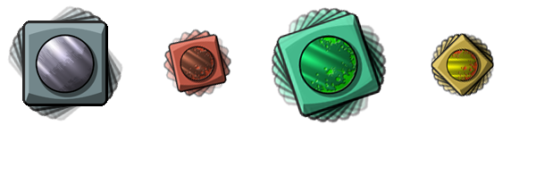

physics_apply_torque(torque)
| Argument | Description |
|---|---|
| torque | The torque (in Newton metres) to be applied |
Returns: N/A
When we talk about torque, we are generally talking about the
tendency of a force or impulse to rotate an instance about its
centre of mass, but in GameMaker: Studio you can also apply
torque independently to an instance, causing it to rotate in a
given direction. How much torque you apply to get the desired
rotation all depends on the size and density of the fixture you
assign to your instance, as both these properties go towards
defining its mass, which defines its inertia, which affects torque!
The general rule of thumb is that if an instance has a lot of
inertia, you will need a lot of torque to get it to start rotating.
It should also be noted that other factors like gravity and
collisions can also affect the torque of an instance. Here is an
image to help explain:

As you can see, the amount of torque you need to rotate the
object depends on the underlying mass and inertia that it gives.
This is all calculated for you by GameMaker: Studio based on
the size and density of the fixture that is assigned to the
instance when it is created. Also note that for anti-clockwise
rotation, the value should be negative.
if keyboard_check(vk_left) physics_apply_torque(-100);
The code above will rotate the instance to the anti-clockwise (to the left) with a torque of 100Nm when the left arrow key is pressed.